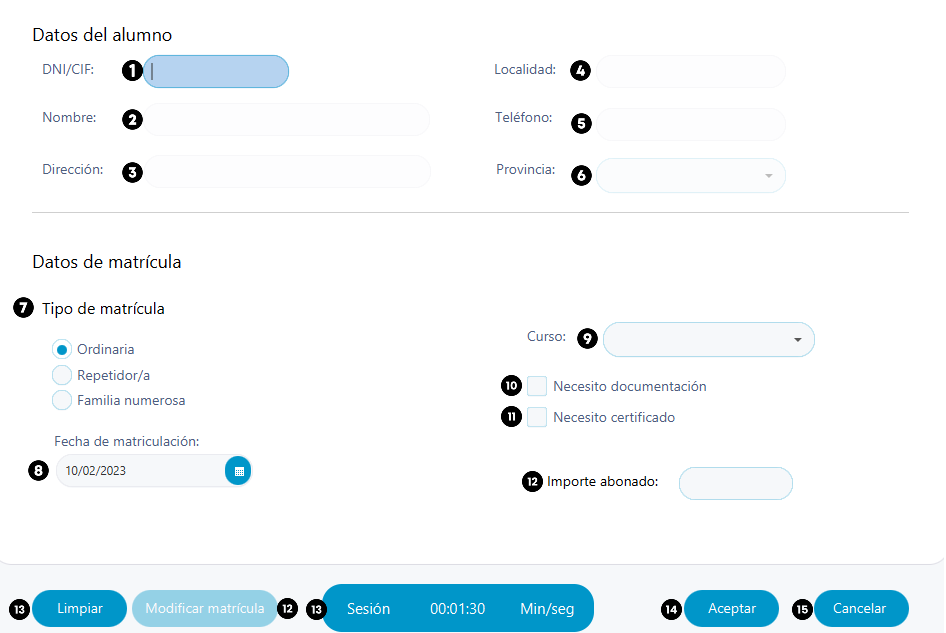

Ayuda nuevo matricula
En esta pestaña podremos insertar los datos
del nuevo curso a añadir.

- Se puede ordenar los alumnos pulsando en cualquier campo deseado(DNI, Nombre, Dirección…)
A tener en cuenta en la introducción de
datos:
- DNI/CIF. Introduzca el DNI/CIF, se verificará automaticamente si
el DNI/CIF existe, si no es asi, se marcará como en rojo el cuadrado, en caso contrario se
desbloqueará las demas casillas (Required).
- Localidad. Introduzca la localidad donde se encuentra el alumno a
registrar. Válidos caracteres de la A a la Z y tildes (Required).
- Nombre. Introduzca el nombre del alumno a registrar. Válidos
caracteres de la A a la Z y tildes (Required).
- Teléfono. Introduzca el numero de teléfono del alumno.
Válidos numeros enteros, se admite extensión (Required).
- Dirección. Introduzca el correo electronigo del alumno a registrar
(Required).
- Provincia. Seleccione la provincia del alumno, válidos unicamente
las provincias de España (Required).
- Tipo de matrícula. Seleccione que tipo de alumno se va a ingresar,
si es Repetidor/a, Ordinaria o con Familia numerosa (Required).
- Fecha de matriculación. Indique la fecha de matricula del
alumno,válidos cualquier fecha. (Required).
- Curso. Seleccione el curso creado en el apartado
curso, indicando el curso en el que se matriculara el alumno. (Required).
- Necesito documentación. Marque la casilla si el alumno necesita documentación a presentar, se sumara un coste adicional al importe abonado.
- Necesito certificado. Marque la casilla si el alumno necesita certificado a presentar, se suamra un coste adicional al importe abonado.
- Importe abonado. Se añadira automaticamente el precio a abonar para el alumno.